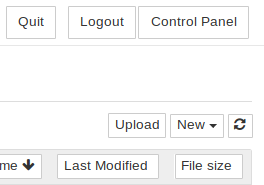
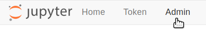

Installing on Digital Ocean¶
Goal¶
By the end of this tutorial, you should have a JupyterHub with some admin users and a user environment with packages you want installed running on DigitalOcean.
Pre-requisites¶
- A DigitalOcean account with a payment method attached.
Step 1: Installing The Littlest JupyterHub¶
Let’s create the server on which we can run JupyterHub.
Log in to DigitalOcean. You might need to attach a credit card or other payment method to your account before you can proceed with the tutorial.
Click the Create button on the top right, and select Droplets from the dropdown menu. DigitalOcean calls servers droplets.

This takes you to a page titled Create Droplets that lets you configure your server.
Under Choose an image, select 18.04 x64 under Ubuntu.

Under Choose a size, select the size of the server you want. The default (4GB RAM, 2CPUs, 20 USD / month) is not a bad start. You can resize your server later if you need.
Check out our guide on How To Estimate Memory / CPU / Disk needed to help pick how much Memory, CPU & disk space your server needs.
Scroll down to Select additional options, and select User data.
This opens up a textbox where you can enter a script that will be run when the server is created. We will use this to set up The Littlest JupyterHub on this server.
Copy the text below, and paste it into the user data text box. Replace
<admin-user-name>with the name of the first admin user for this JupyterHub. This admin user can log in after the JupyterHub is set up, and can configure it to their needs. Remember to add your username!#!/bin/bash curl https://raw.githubusercontent.com/jupyterhub/the-littlest-jupyterhub/master/bootstrap/bootstrap.py \ | sudo python3 - \ --admin <admin-user-name>
Note
See What does the installer do? if you want to understand exactly what the installer is doing. Customizing the Installer documents other options that can be passed to the installer.
Under the Finalize and create section, enter a
hostnamethat descriptively identifies this server for you.Click the Create button! You will be taken to a different screen, where you can see progress of your server being created.
In a few seconds your server will be created, and you can see the public IP used to access it.
The Littlest JupyterHub is now installing in the background on your new server. It takes around 5-10 minutes for this installation to complete.
Check if the installation is complete by copying the public ip of your server, and trying to access it with a browser. This will fail until the installation is complete, so be patient.
When the installation is complete, it should give you a JupyterHub login page.

Login using the admin user name you used in step 6, and a password. Use a strong password & note it down somewhere, since this will be the password for the admin user account from now on.
Congratulations, you have a running working JupyterHub!
Step 2: Adding more users¶
Most administration & configuration of the JupyterHub can be done from the web UI directly. Let’s add a few users who can log in!
Open the Control Panel by clicking the control panel button on the top right of your JupyterHub.
In the control panel, open the Admin link in the top left.
This opens up the JupyterHub admin page, where you can add / delete users, start / stop peoples’ servers and see who is online.
Click the Add Users button.

A Add Users dialog box opens up.
Type the names of users you want to add to this JupyterHub in the dialog box, one per line.

You can tick the Admin checkbox if you want to give admin rights to all these users too.
Click the Add Users button in the dialog box. Your users are now added to the JupyterHub! When they log in for the first time, they can set their password - and use it to log in again in the future.
Congratulations, you now have a multi user JupyterHub that you can add arbitrary users to!
Step 3: Install conda / pip packages for all users¶
The User Environment is a conda environment that is shared by all users
in the JupyterHub. Libraries installed in this environment are immediately
available to all users. Admin users can install packages in this environment
with sudo -E.
Log in as an admin user and open a Terminal in your Jupyter Notebook.

Install gdal from conda-forge.
sudo -E conda install -c conda-forge gdal
The
sudo -Eis very important!Install
therewithpipsudo -E pip install there
The packages gdal and there are now available to all users in JupyterHub.
If a user already had a python notebook running, they have to restart their notebook’s
kernel to make the new libraries available.
See Install conda, pip or apt packages for more information.